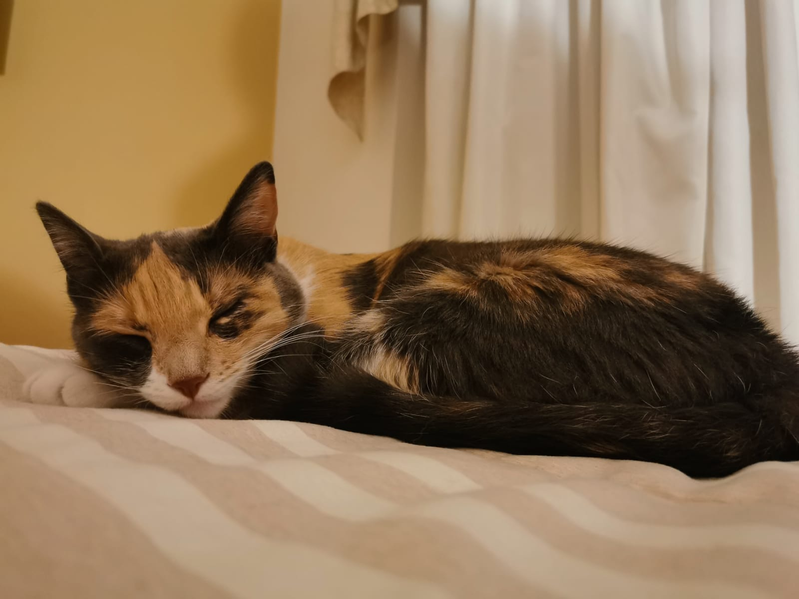
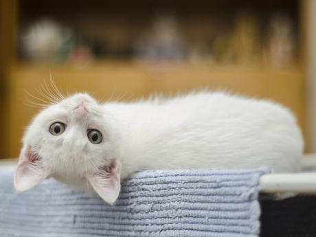
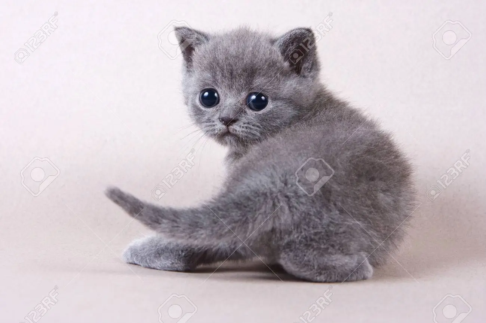
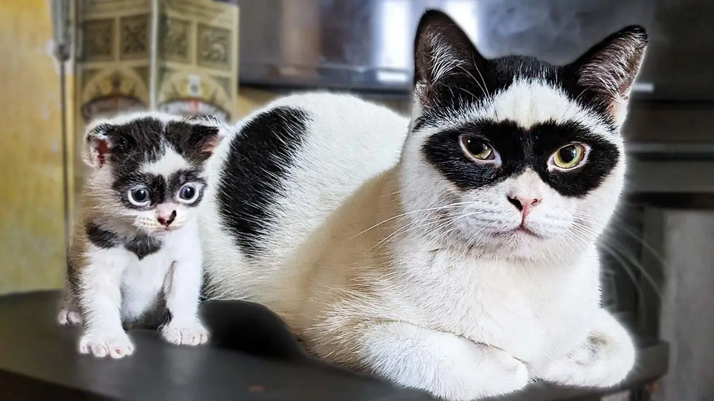
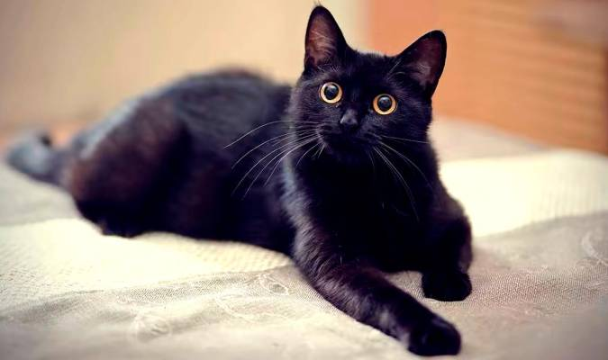

¿Qué se dice sobre cada uno?
Vamos a averiguar si el porcentaje de la gente que acordaron esas caracteristicas condicen con las siguientes descripciones.
¿Cómo es la personalidad de los gatos tricolor?
Los gatos tricolores son los que muestran una personalidad más variable y sorprendente. Suelen ser muy activos, juguetones y curiosos. Un dato curioso es que los gatos tricolores siempre son hembras, y si llega a ser macho significa que ese gatito es esteril. Esta peculiaridad genética y la personalidad que conlleva puede estar muy relacionada con los cambios hormonales.
En el caso de "Mindi" ella es muy parlanchina, juguetona, curiosa, energica y cariñosa sólo cuando tiene sueño. Ama dormir.
Personalidad de los gatos amarillos, naranja o pelirrojo
Los gatos rubios o naranjas son especialmente dulces y cariñosos siendo los que más predisposición muestran a maullar en busca de afecto, caricias y palabras afectuosas.
Adoran restregarse y recibir caricias siendo los que más se dejan manipular de entre todos los colores de gato que existen. No obstante, al principio suelen mostrarse tímidos, como cualquier recién llegado.
Lo descripto es fiel imagen de mi gathijo rubio, "el gordito".
Personalidad del gato blanco
Los gatos blancos son sin duda aquellos que tienen una personalidad más compleja y difícil de comprender. Suelen necesitar más tiempo y paciencia para establecer una relación, pero una vez que ésta se forma es para siempre.
Exceptuando con sus familiares, el gato blanco suele ser el más tímido, distante y acometedor. Aprovechará cualquier circunstancia o mano cercana para lanzar un zarpazo. No obstante, y como hemos comentado, el gato blanco será muy fiel con quienes tenga confianza.
¿Como es el gato gris?
Los gatos grises tienen, por lo general, una actitud traviesa, divertida y cariñosa. Son especialmente bellos y tienen un poco de todas las personalidades. Es un gato fantástico que se deja manipular y acariciar pero sin perder su naturaleza felina.
Gatos bicolor
Los gatos bicolor suelen tener una personalidad estable pero distante. Podrán ser sumamente cariñosos contigo y al minuto siguiente huir cuando intentas tocarles. Esta peculiaridad de su carácter les hace tremendamente curiosos y sorprendentes.
Gatos color negro ¿cómo son, traen mala suerte?
Muchas personas saben que los gatos negros se asocian a la mala suerte como consecuencia de su persecución en la edad media, no obstante, en otras culturas el gato negro ha recibido un trato mucho más favorable. ¿Por qué?
Lo cierto es que el gato negro es el que tiene más predisposición a ser tranquilo, tímido pero muy cariñoso. Como descubrirás si algún día tienes uno, el gato negro tiene algo especial y único, una personalidad mucho más sensible que la de los otros gatos.
